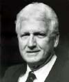
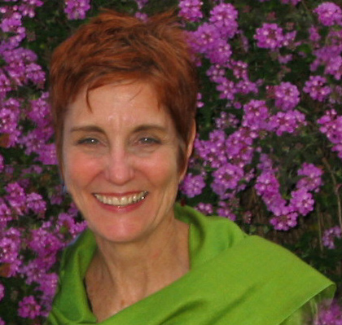

C.G. Jung Society, Seattle C.G. Jung Society, Seattle
C.G. Jung Society, Seattle C.G. Jung Society, SeattleDiscussion: Friday Evenings, 7 to 9:30 p.m., April 1 and May 20, 2005.
Antioch University, Room 100, 2326 Sixth Ave., Seattle (corner of Sixth and Bell)
Free admission
Sponsored by Antioch University Seattle and the C.G. Jung Society, Seattle.
See the new mission statement for the series.
| Book | Presentation | Article |
|---|---|---|
| James Hillman's new book A Terrible Love of War (order from this link and support the Society) | This series was inspired by the Society's 30th-anniversary event at Seattle Art Museum, Portals to Psyche: Jungian Trends in the Northwest. You can now access a text version of Terrill Gibson's concluding presentation, in rich-text format (.rtf). | "Terrorism: We should take a clue from our immune system" is an editorial by John van Eenwyk, Ph.D., in the Sunday, June 20, 2004 edition of the Seattle Post-Intelligencer. It is based on his presentation at the Portals to Psyche conference. |
Come join your fellow citizens in a community discussion about the current state of the American Psyche. Each session will begin with a presentation by a well-known speaker who is familiar with the language of depth psychology and the insights of C.G. Jung as applied to the collective psyche. We will then break up into small groups so that each person can listen and be heard as they struggle to make sense of the events currently taking place in the American landscape. We will then reconvene for a full group discussion. Please join us, and bring a friend!
Electoral democracy was founded as an alternative to revolution and violence. America is currently engaged in another presidential election season. The country is highly polarized over fundamental issues of war, the economy and the environment. Most analyses of the current state of America use political and economic categories to understand what is going on. Valuable as these analyses are, they seem to miss an important level of human experience. The psychologist C.G. Jung named this level of experience "the Psyche" and provided a set of psychological categories that would allow us to enter this territory. While Dr. Jung's work is best known as a psychotherapeutic approach to individual suffering, he also provided powerful tools for understanding and addressing the suffering of the collective psyche. As Dr. Jung once said,
Our personal psychology is just a thin skin, a ripple on the ocean of collective psychology. The powerful factor, the factor which changes our whole life, which changes the surface of our known world, which makes history, is collective psychology, and collective psychology moves according to laws entirely different from those of our consciousness. The archetypes are the great decisive forces, they bring about the real events, and not our personal reasoning and practical intellect. .... The archetypal images decide the fate of man. (CW 18; 371)
"Psyche and the Spirit of the Times" is a series of conversations designed to help us discover analytic tools that we can use to understand the current dynamics of collective psychology and to shape our choices in response. Each session will begin with an address by a well-known practitioner of Jungian psychology. We will then break into small discussion groups so that each person may both listen and speak from their heart. We will conclude with a large group discussion to share our concerns and insights.
The current presidential election is highlighting the fault lines of the American Psyche. Come join us in a spirit of hope that our caring can ameliorate some of this suffering, and lead us deeper into an understanding of America's destiny and its role in the fate of the earth.


 Terrill L. Gibson, Ph.D., is an ordained United Methodist elder, diplomate pastoral psychotherapist, an approved supervisor for the American Association for Marriage and Family Therapy, and a diploma Jungian analyst who practices individual and family therapy with Pastoral Therapy Associates in Tacoma. He lectures and writes widely on the basic theme of the integration of psychotherapy and spirituality. He has been a frequent consultant, faculty, supervisor, and facilitator for a variety of Pacific Northwest universities, social service agencies, corporations, and religious congregations. He has a passion for film, sea kayaks, and the blues.
Terrill L. Gibson, Ph.D., is an ordained United Methodist elder, diplomate pastoral psychotherapist, an approved supervisor for the American Association for Marriage and Family Therapy, and a diploma Jungian analyst who practices individual and family therapy with Pastoral Therapy Associates in Tacoma. He lectures and writes widely on the basic theme of the integration of psychotherapy and spirituality. He has been a frequent consultant, faculty, supervisor, and facilitator for a variety of Pacific Northwest universities, social service agencies, corporations, and religious congregations. He has a passion for film, sea kayaks, and the blues.
 David Spangler is a writer and spiritual teacher. Since childhood, he has been aware of the subtle realms of life beyond the physical. He began teaching in 1964 and from 1970 to 1973 was co-director of the Findhorn Foundation Community in northern Scotland. He is a co-founder of the Lorian Association, a not-for-profit spiritual educational institution that provides both online and face-to-face programs in incarnational spirituality and world work, including a two-year master's degree program in contemporary spirituality. David is the author of many books on spirituality, including The Call, Parent as Mystic, Mystic as Parent, Blessing, and The Story Tree, a book of short stories. His most recent publication is Manifestation, a combination card deck and manual for exploring personal creativity. His Web site is www.Lorian.org.
David Spangler is a writer and spiritual teacher. Since childhood, he has been aware of the subtle realms of life beyond the physical. He began teaching in 1964 and from 1970 to 1973 was co-director of the Findhorn Foundation Community in northern Scotland. He is a co-founder of the Lorian Association, a not-for-profit spiritual educational institution that provides both online and face-to-face programs in incarnational spirituality and world work, including a two-year master's degree program in contemporary spirituality. David is the author of many books on spirituality, including The Call, Parent as Mystic, Mystic as Parent, Blessing, and The Story Tree, a book of short stories. His most recent publication is Manifestation, a combination card deck and manual for exploring personal creativity. His Web site is www.Lorian.org.
Updated:
8 June, 2005
webmaster@jungseattle.org